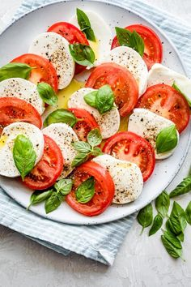

Salată Caprese

Ingrediente:
- Roșii
- Mozzarella
- Busuioc proaspăt
- Oțet balsamic
Mod de preparare:
- Taie roșiile și mozzarella în felii subțiri.
- Așază-le pe un platou, alternând roșiile și brânza.
- Stropește cu oțet balsamic și ulei de măsline.
Informații nutriționale per porție:
- Calorii
- Proteine
- Carbohidrați
Vezi rețeta originală de Salata Caprese aici